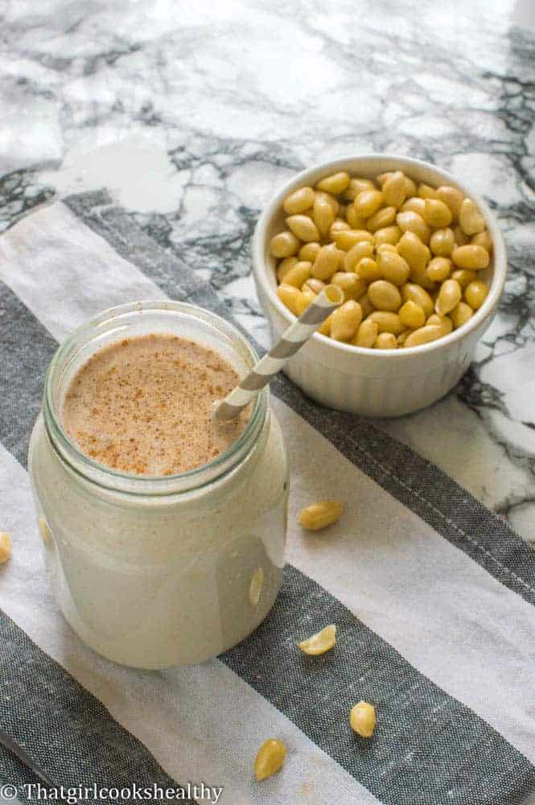

Peanut Punch

Description
Caribbean peanut punch is a refreshing and creamy beverage made from peanuts, condensed milk, water, milk, vanilla and nutmeg.
Ingredients
- 1 cup of shelled peanuts skinless is optional
- 11/4 cup of coconut milk see post for recipe
- ½ cup of dairy free condensed milk see post for recipe
- ½ cup of water
- ½ teaspoon of vanilla powder or extract
- ¼ teaspoon of nutmeg
Steps
- Preheat the oven at 350 degrees or gas mark 4.
- Pour the peanuts on a lined baking tray and roast for roughly 5-7 minutes (you should be able to smell the aroma).
- Remove from oven and allow to cool.
- Place the peanuts, water and coconut milk in a blender and blend into the peanuts are ground.
- Pour into a cheesecloth and strain the peanut liquid, squeeze out the excess and discard the pulp.
- Stir in the condensed milk, vanilla and nutmeg.
- Serve accordingly.